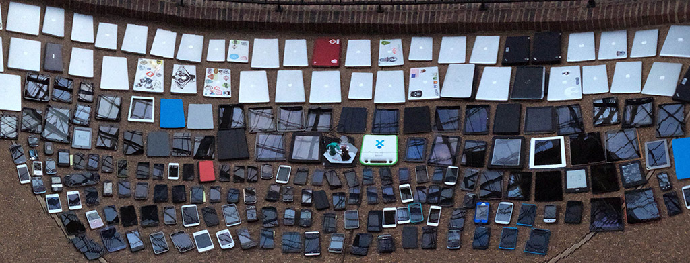
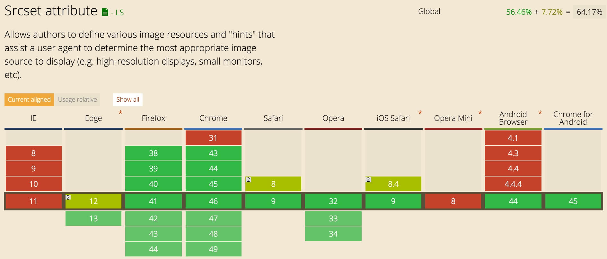
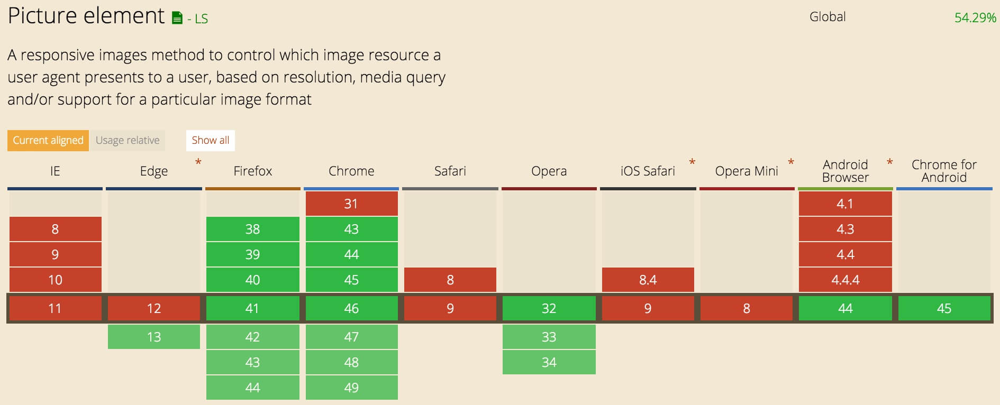

Using Responsive Images (Now)
By Chen Hui Jing / @hj_chen
So you want to build a responsive website?
The obesity problem
>60% from images
Lose-lose situation
Blurry image on HD 5K display?

5mb pixel-dense image on 3.8inch Nokia phone?

Potential solutions
| WURFL.js | Requires additional development effort for it to place nice in your project |
| Adaptive image | Server-side solution; Dependent on PHP; May need to mess around with server configuration |
| Using cookies | Mostly experimental; Not advisable for production sites |
| Hack <img> | Not scalable for image heavy sites; Fails validation; Not semantic |
<srcset> and <picture>
Responsive image solution native to the browser.
Some background
🎮 🏀 🚲 💻 👟
My name is Chen Hui Jing.
Self taught designer and developer.
Works at Nurun Singapore.
Write blog posts from time to time.
The <srcset> attribute
Declare comma-separated list of image sources, which browsers will serve according to certain conditions we specify using descriptors.
Descriptors
x descriptors indicate the pixel-density of an image
w descriptors indicate the width of an image
The <sizes> attribute
Must be present if w descriptors are used
Syntax: <media-condition> <CSS length>
You can't use percentages for the second condition.
The only relative CSS lengths you can use are viewport units.
sizes="(max-width: 400px) 100vw,
(max-width: 960px) 75vw,
640px"Fixed width images
<img srcset="crest-383.jpg 1.5x, crest-510.jpg 2x"
src="crest-255.jpg"
alt="USWNT crest" />Fluid width images
<img srcset="uswnt-480.jpg 480w,
uswnt-640.jpg 640w,
uswnt-960.jpg 960w,
uswnt-1280.jpg 1280w"
sizes="(max-width: 400px) 100vw,
(max-width: 960px) 75vw,
640px"
src="uswnt-640.jpg" alt="USWNT World Cup victory">The <picture> element
A wrapper for the image and its sources.
<picture>
<source media="(min-width: 40rem)"
srcset="full-large.jpg 1024w,
full-medium.jpg 640w,
full-small.jpg 320w"
sizes="33.3vw" />
<source srcset="cropped-large.jpg 2x,
cropped-small.jpg 1x" />
<img src="full-small.jpg" alt="An awesome image" />
</picture>The <source> element
Allows us to declare multiple sets of image sources.
Syntax: <media attribute>|<type attribute> <srcset attribute>
The <media attribute> and <type attribute> are optional for a single source, but either one is required when using multiple <source>s.
<source media="(min-width: 1280px)" srcset="wide-large.jpg 1280w, wide-medium.jpg 960w, wide-small.jpg 640w" sizes="33.3vw">
<source media="(min-width: 960px)" srcset="cropped-large.jpg 960w, cropped-medium.jpg 720w, cropped-small.jpg 480w" sizes="50vw">
<source srcset="narrow-large.jpg 2x, narrow-small.jpg 1x">Art direction use-case
<picture>
<source media="(min-width: 960px)" srcset="ticker-tape-large.jpg">
<source media="(min-width: 575px)" srcset="ticker-tape-medium.jpg">
<img src="ticker-tape-small.jpg" alt="USWNT ticker-tape parade">
</picture>Image format use-case
Order of source matters.
Falls back to original <img> element.
<picture>
<source type="image/vnd.ms-photo" src="wwc2015.jxr">
<source type="image/jp2" src="wwc2015.jp2">
<source type="image/webp" src="wwc2015.webp">
<img src="wwc2015.png" alt="WWC 2015">
</picture>Can I use...srcset?
Can I use...picture?
Polyfill
The go-to polyfill for responsive images is Picturefill by Scott Jehl.
To find out more...
Native Responsive Images by Yoav Weiss
Responsive images get real with Mat Marquis
The anatomy of responsive images by Jake Archibald
For latest updates...
Join the Responsive Images Community Group.
Sign up for their newsletter.
Follow the RICG on Twitter.